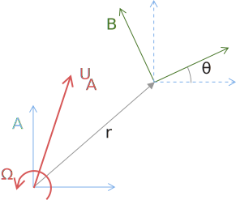

Plucker vectors and coordinate transforms
Here we discuss the use of Plücker vectors and their transforms for describing rigid-body motion and force. Plücker vectors succinctly describe both the angular (rotational) and linear (translational) part of motion, and the angular (moment) and linear (force) part of force. In three dimensions, a Plücker vector is 6-dimensional, e.g., Plücker velocity and force vectors are
\[v = \begin{bmatrix} \Omega_x \\ \Omega_y \\ \Omega_z \\ U_x \\ U_y \\ U_z \end{bmatrix}, \qquad f = \begin{bmatrix} M_x \\ M_y \\ M_z \\ F_x \\ F_y \\ F_z \end{bmatrix}\]
In two dimensions, there is only one angular component and two linear components, e.g.,
\[v = \begin{bmatrix} \Omega_z \\ U_x \\ U_y \end{bmatrix}, \qquad f = \begin{bmatrix} M_z \\ F_x \\ F_y \end{bmatrix}\]
We need to be able to transform these vectors from one coordinate system to another. This requires rotating their components and shifting their center from one origin to another. For example, a translational velocity based at system B will be different from the translational velocity at system A because of the rotational velocity, $\Omega \times {}^Br_{A}$, where ${}^Br_{A}$ is the vector from the origin of A to the origin of B.
Similarly, the moment about B will be different from the moment about A due to the moment arm ${}^Br_{A} \times F$.
using RigidBodyTools
using LinearAlgebra
using PlotsPlücker vectors
A Plücker vector is easily created by simply supplying a vector of its components
v = PluckerMotion([1.0,2.0,3.0])2d Plucker motion vector, Ω = 1.0, U = [2.0, 3.0]This created a 2d motion vector, with angular velocity 1.0 and linear velocity (2.0,3.0). One can also supply the angular and linear parts separately, using keywords. If one of these keywords is omitted, it defaults to zero for that part. Note that we also need to write this as PluckerMotion{2} to specify the physical dimensionality. For a 3d motion vector, one would write PluckerMotion{3} here.
v2 = PluckerMotion{2}(angular=1.0,linear=[2.0,3.0])
v2 == vtrueWe can also pick off the angular and linear parts
angular_only(v)PluckerMotionAngular{2}(2d Plucker motion vector, Ω = 1.0, U = [2.0, 3.0])and
linear_only(v)PluckerMotionLinear{2}(2d Plucker motion vector, Ω = 1.0, U = [2.0, 3.0])Force vectors are similar
f = PluckerForce([-1.0,-3.5,2.25])2d Plucker force vector, M = -1.0, F = [-3.5, 2.25]The vectors of the same type can be added and subtracted
v3 = v + v22d Plucker motion vector, Ω = 2.0, U = [4.0, 6.0]We can also take a scalar product of force and motion vectors
dot(f,v)-1.25Transforms
Transforms are constructed by describing the relationship between the two coordinate systems. Consider the example in the figure below.

To develop the 2d transform from A to B, we supply the position $r$ and the rotation angle $\theta$. For example, if B is shifted by [1,1] and rotated by angle $\pi/6$ counterclockwise about A, then we construct the transform as
Xm = MotionTransform([1,1],π/6)2d motion transform, x = [1.0, 1.0], R = [0.8660254037844387 0.49999999999999994; -0.49999999999999994 0.8660254037844387]Note that it uses the angle of rotation, $\pi/6$, to create a rotation matrix operator.
A 2d force transform would be constructed by
Xf = ForceTransform([1,1],π/6)2d force transform, x = [1.0, 1.0], R = [0.8660254037844387 0.49999999999999994; -0.49999999999999994 0.8660254037844387]For 3d transforms, we need to supply the rotation operator itself (as well as the 3d translation vector). Often, this rotation is done by rotating about a certain axis by a certain angle. We do this with the rotation_about_axis function. For example, to rotate by $\pi/4$ about an axis parallel to the vector $[1,1,1]$, then we use
R = rotation_about_axis(π/4,[1,1,1])3×3 StaticArraysCore.SMatrix{3, 3, Float64, 9} with indices SOneTo(3)×SOneTo(3):
0.804738 -0.310617 0.505879
0.505879 0.804738 -0.310617
-0.310617 0.505879 0.804738and then to translate this rotated system by $[-1,-2,-3]$,
Xm = MotionTransform([-1,-2,-3],R)3d motion transform, x = [-1, -2, -3], R = [0.8047378541243648 -0.31061721752604554 0.5058793634016806; 0.5058793634016806 0.8047378541243648 -0.31061721752604554; -0.31061721752604554 0.5058793634016806 0.8047378541243648]and similarly for a force transform.
We can also compute the inverses of these transforms, to transform back from B to A
inv(Xm)3d motion transform, x = [1.7011415092773154, 1.1835034190722735, 3.11535507165041], R = [0.8047378541243648 0.5058793634016806 -0.31061721752604554; -0.31061721752604554 0.8047378541243648 0.5058793634016806; 0.5058793634016806 -0.31061721752604554 0.8047378541243648]Transforms of the same type (motion or force) can be composed via multiplication to transform from, e.g., A to B to C.
Xm1 = MotionTransform([1.5,1.5],π/6)
Xm2 = MotionTransform([-1,1],π/3)
Xm2*Xm12d motion transform, x = [0.1339745962155614, 1.8660254037844388], R = [2.1460752085336256e-16 1.0; -1.0 2.1460752085336256e-16]Transforming bodies
We can use motion transforms, in particular, to place bodies. We simply apply the transform as a function, and it transforms the body's coordinates. For example, transform Xm1 above shifts the body to [1.5,1.5] and rotates it counterclockwise by π/6:
b = Ellipse(1.0,0.2,0.02)
plot(b,xlims=(-3,3),ylims=(-3,3),fillcolor=:gray)
plot!(Xm1(b),xlims=(-3,3),ylims=(-3,3))In the example above, we did not affect the original body by applying the transform as a function. Rather, we created a copy of the body.
If, instead, you wish to transform the body in place, use update_body!
update_body!(b,Xm1)Elliptical body with 208 points and semi-axes (1.0,0.2)
Current position: (1.5,1.5)
Current angle (rad): 0.5235987755982987
One important note: a body stores a set of coordinates in its own intrinsic coordinate system, and when a transform is applied to the body, it always acts on these coordinates. This means that the transform's application on the body cannot be carried out as a composite of operations, e.g. T2(T1(b)) is not possible. Insteady, in the application on the body, the transform is always interpreted such that system A is the inertial coordinate system and B is the body system. Of course, the transform itself can always be constructed from composite transforms.
Sometimes we need information about the normals in the body system. For these, we can use normalmid with the flag axes=:body:
nx, ny = normalmid(b,axes=:body)([1.0000000000000002, 0.886335337801729, 0.7369383257078719, 0.6074921092237509, 0.5315356836790487, 0.46002086938081577, 0.4196286225913622, 0.37383679538157694, 0.3490372105915698, 0.3162175178317445 … 0.29937695843692386, 0.3162178254216906, 0.3490368976183922, 0.37383710310484886, 0.4196283157312741, 0.460021163993197, 0.5315354051225997, 0.6074923550501666, 0.7369381416992703, 0.886335424329191], [-0.0, 0.46304391688468227, 0.6759599870575563, 0.7943257123062704, 0.8470359006416734, 0.8879081032033317, 0.9076958847004369, 0.9274945015571872, 0.9371088654059572, 0.9486867140507002 … -0.9541349153851568, -0.9486866115243676, -0.9371089819764412, -0.9274943775259097, -0.9076960265620437, -0.8879079505660217, -0.8470360754425852, -0.7943255243006957, -0.6759601876655473, -0.46304375125812297])Finally, if you wish to transform the body's own coordinate system, rather than use the transform to simply place the body in the inertial system, then use transform_body!. This transforms the intrinsic coordinates of the body.
transform_body!(b,Xm1)Elliptical body with 208 points and semi-axes (1.0,0.2)
Current position: (1.5,1.5)
Current angle (rad): 0.5235987755982987
Transforming Plücker vectors
Transforms can be applied to Plücker vectors to transform their components between systems. Let's consider a 2d example in which the motion based at system A is purely a rotation with angular velocity $\Omega = 1$, and we wish to transform this to system B, translated by $[2,0]$ from A, but with axes aligned with B. We expect that the velocity based at B should have the same angular velocity, but also should have translational velocity equal to $[0,2]$ due to the angular motion.
First we construct the motion vector at A
Ω = 1.0
vA = PluckerMotion(Ω,[0,0])2d Plucker motion vector, Ω = 1.0, U = [0.0, 0.0]Now construct the transform from A to B:
XA_to_B = MotionTransform([2,0],0)2d motion transform, x = [2.0, 0.0], R = [1.0 -0.0; 0.0 1.0]Now apply the transform to get the velocity at B:
vB = XA_to_B*vA2d Plucker motion vector, Ω = 1.0, U = [0.0, 2.0]which gives the expected result. Now let's transform back, using the inverse, and check that we get back to vA
inv(XA_to_B)*vB2d Plucker motion vector, Ω = 1.0, U = [0.0, 0.0]Transform functions
RigidBodyTools.PluckerMotion — TypePluckerMotion(data::AbstractVector)Creates an instance of a Plucker motion vector,
$v = \begin{bmatrix} \Omega \\ U \end{bmatrix}$
using the vector in data. If data is of length 6, then it creates a 3d motion vector, and the first 3 entries are assumed to comprise the rotational component \Omega and the last 3 entries the translational component U. If data is of length 3, then it creates a 2d motion vector, assuming that the first entry in data represents the rotational component and the second and third entries the x and y translational components.
RigidBodyTools.PluckerForce — TypePluckerForce(data::AbstractVector)Creates an instance of a Plucker force vector,
$f = \begin{bmatrix} M \\ F \end{bmatrix}$
using the vector in data. If data is of length 6, then it creates a 3d force vector, and the first 3 entries are assumed to comprise the moment component M and the last 3 entries the force component F. If data is of length 3, then it creates a 2d force vector, assuming that the first entry in data represents the moment component and the second and third entries the x and y force components.
RigidBodyTools.angular_only — Functionangular_only(v::AbstractPluckerVector)Returns a Plucker vector with only the angular part of the motion or force vector v available for subsequent operations. Note that no copy of the original data in v is made. Rather, this simply provides a lazy reference to the angular data in v.
RigidBodyTools.linear_only — Functionlinear_only(v::AbstractPluckerVector)Returns a Plucker vector with only the linear part of the motion or force vector v available for subsequent operations. Note that no copy of the original data in v is made. Rather, this simply provides a lazy reference to the linear data in v.
LinearAlgebra.dot — Methoddot(f::AbstractPluckerForceVector,v::AbstractPluckerMotionVector) -> RealCalculate the scalar product between force f and motion v. The commutation of this is also possible, dot(v,f).
RigidBodyTools.MotionTransform — Type(T::MotionTransform)(b::Body) -> BodyTransforms a body b using the given MotionTransform, creating a copy of this body with the new configuration. In using this transform T (which defines a transform from system A to system B), A is interpreted as an inertial coordinate system and B as the body system. Thus, the position vector in T is interpreted as the relative position of the body in inertial coordinates and the inverse of the rotation operator is applied to transform body-fixed coordinates to the inertial frame.
MotionTransform(xA_to_B::SVector,RA_to_B::SMatrix) -> MotionTransformComputes the Plucker transform matrix for motion vectors, transforming from system A to system B. The input xA_to_B is the Euclidean vector from the origin of A to the origin of B, expressed in A coordinates, and RA_to_B is the rotation matrix transforming coordinates in system A to those in system B. The resulting matrix has the form
${}^B T^{(m)}_A = \begin{bmatrix} R & 0 \\ 0 & R \end{bmatrix} \begin{bmatrix} 1 & 0 \\ -x^\times & 1 \end{bmatrix}$
One can also provide xA_to_B as a standard vector and RA_to_B as a standard 3 x 3 matrix.
If xA_to_B has length 3, then a three-dimensional transform (a 6 x 6 Plucker transform) is created. If xA_to_B has length 2, then a two-dimensional transform (3 x 3 Plucker transform) is returned.
MotionTransform(xA_to_B,θ::Real) -> MotionTransformComputes the 3 x 3 2D Plucker transform matrix for motion vectors, transforming from system A to system B. The input xA_to_B is the 2-d Euclidean vector from the origin of A to the origin of B, expressed in A coordinates, and θ is the angle of system B relative to system A. xA_to_B can be in the form of a static vector, a vector, or a tuple.
MotionTransform(T::RigidTransform) -> MotionTransformComputes the 3 x 3 2D Plucker transform matrix for motion vectors, transforming from system A to system B, from the rigid transform T.
RigidBodyTools.ForceTransform — TypeForceTransform(xA_to_B::SVector,RA_to_B::SMatrix) -> ForceTransformComputes the 6 x 6 Plucker transform matrix for force vectors, transforming from system A to system B. The input xA_to_B is the Euclidean vector from the origin of A to the origin of B, expressed in A coordinates, and RA_to_B is the rotation matrix transforming coordinates in system A to those in system B. The resulting matrix has the form
${}^B T^{(f)}_A = \begin{bmatrix} R & 0 \\ 0 & R \end{bmatrix} \begin{bmatrix} 1 & -x^\times \\ 0 & 1 \end{bmatrix}$
ForceTransform(xA_to_B,θ::Real) -> ForceTransformComputes the 3 x 3 2D Plucker transform matrix for force vectors, transforming from system A to system B. The input xA_to_B is the 2-d Euclidean vector from the origin of A to the origin of B, expressed in A coordinates, and θ is the angle of system B relative to system A. xA_to_B can be in the form of a static vector, a vector, or a tuple.
ForceTransform(T::RigidTransform) -> ForceTransformComputes the 3 x 3 2D Plucker transform matrix for force vectors, transforming from system A to system B, from the rigid transform T.
Base.inv — Methodinv(M)Matrix inverse. Computes matrix N such that M * N = I, where I is the identity matrix. Computed by solving the left-division N = M \ I.
Examples
julia> M = [2 5; 1 3]
2×2 Matrix{Int64}:
2 5
1 3
julia> N = inv(M)
2×2 Matrix{Float64}:
3.0 -5.0
-1.0 2.0
julia> M*N == N*M == Matrix(I, 2, 2)
trueinv(X::AbstractTransformOperator) -> AbstractTransformOperatorReturn the inverse of the motion or force transform X.
Base.transpose — Methodtranspose(X::MotionTransform) -> ForceTransform
transpose(X::ForceTransform) -> MotionTransformFor a motion transform X mapping from system A to B, returns the force transform mapping from B to A. Alternatively, if X is a force transform, it returns the motion transform.
RigidBodyTools.rotation_transform — Functionrotation_transform(T::AbstractTransformOperator) -> AbstractTransformOperatorReturns a transform operator consisting of only the rotational part of T.
RigidBodyTools.translation_transform — Functiontranslation_transform(T::AbstractTransformOperator) -> AbstractTransformOperatorReturns a transform operator consisting of only the translational part of T.
RigidBodyTools.update_body! — Functionupdate_body!(b::Body,T::MotionTransform)Transforms a body (in-place) using the given MotionTransform. In using this transform T (which defines a transform from system A to system B), A is interpreted as an inertial coordinate system and B as the body system. Thus, the position vector in T is interpreted as the relative position of the body in inertial coordinates and the inverse of the rotation operator is applied to transform body-fixed coordinates to the inertial frame.
update_body!(bl::BodyList,tl::MotionTransformList) -> BodyListCarry out in-place transformations of each body in bl with the corresponding transformation in tl.
update_body!(bl::Union{Body,BodyList},x::AbstractVector,m::RigidBodyMotion)Update body/bodies in bl with the rigid-body motion m and state vector x.
RigidBodyTools.transform_body! — Functiontransform_body!(b::Body,T::MotionTransform)Transforms a body's own coordinate system (in-place) using the given MotionTransform. This function differs from update_body! because it changes the coordinates of the body in its own coordinate system, whereas the latter function only changes the inertial coordinates of the body. T is interpreted as a transform from the new system to the old system.
transform_body!(bl::BodyList,tl::MotionTransformList) -> BodyListCarry out in-place transformations of body coordinate systems for each body in bl with the corresponding transformation in tl.
update_body!(bl::Union{Body,BodyList},x::AbstractVector,m::RigidBodyMotion)Transform body/bodies in bl with the rigid-body motion m and state vector x.
This page was generated using Literate.jl.